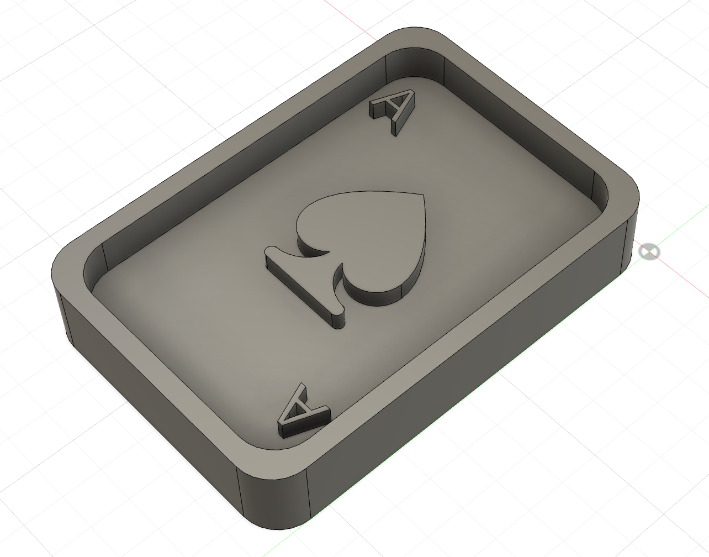

week 8
ideation
for this week’s project, i really wanted to make functional decor. i’ve created so many cute little things in this class, but i really don’t have anywhere to put it. i was inspired to make something poker related, mainly because i’ve been talking a lot about poker with my friends recently. i had the idea to make some sort of tray in the shape of a playing card.
design
originally, I wanted to make a wooden poker tray and then create a mold of the inside of the tray to produce the other side of the card into resin. however, the cnc mill was in high demand for the foreseeable future, so i changed the dimensions of the tray to be a wax mold instead. it was tricky to get the mold small enough to fit it in the wax, but i was able to use the srm-20 mill.


post-processing
after i got the wax mold, i mixed some acrylic paint with a resin mixture and poured it in. however, i couldn't find any mold release spray. i have no idea how to take it out...

wooden tray
the next day, i was still set on my original idea of a wooden tray, and used my original design to create a bigger cut out of wood. however, i ran into some problems since during the first cut where i used a 1/8 bit, since the wood loosened out of the nails so i had to stop the cut. additionally, the cut wasn’t very clean, so i decided to redo it with a 1/16 bit instead to cut the details, and then switch for a 1/8 bit to cut the perimeter.